AUDIO / SPEECH EMOTION
Speech Emotion Recognition
Hear the feeling. Prove it in numbers.
CNN on MFCC features, benchmarked against SVM and BiLSTM baselines.
87%
test accuracyTeam lead · team of 4.
Sep – Nov 2025.
Sep – Nov 2025.
TENSORFLOW · MFCC · CNN